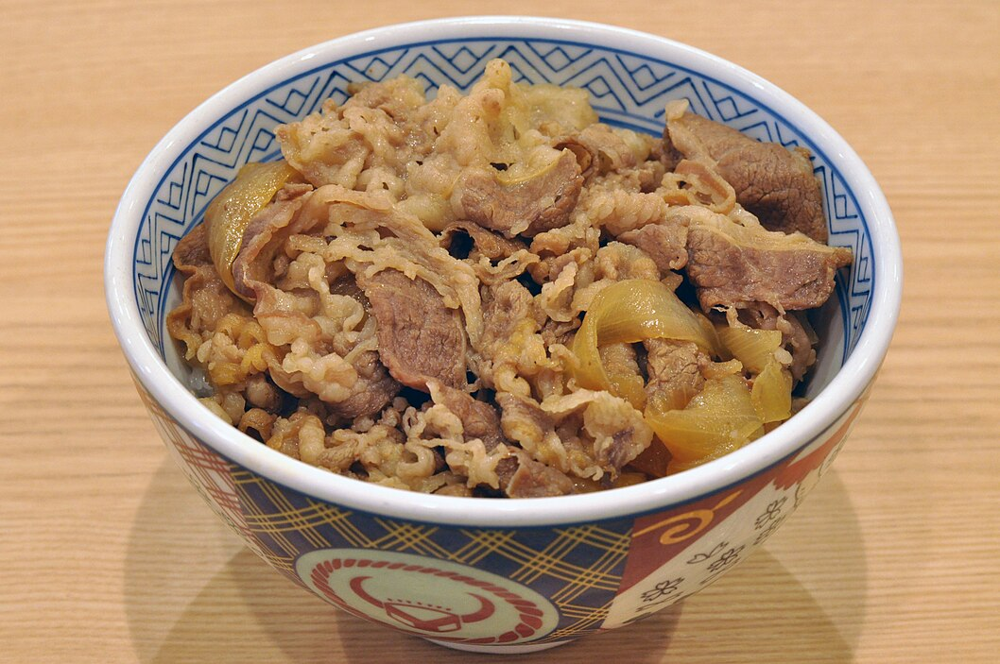

Gyudon
Home

gyudon
This recipe is easier to follow since the meat is only boiled.
Ingredients
- thinly sliced beef (shortplate or ribyeye/chuck w/ good marbling+high fat) - 1/2 lg (227g)
- onion - 1/2
- green onion - 1
- awase dashi or [~1(per 1 cup of water)] instant dashi powder - 1/2 (120ml)
- soy sauce - 1/4 (60 ml)
- mirin - 3 tbsp (45 ml)
- sake or water - 2 tbsp (30 ml)
- sugar - 1 tbsp (12.5 ml)
- shichimi togarashi (optional)
- pickled red ginger (optional)
Prep
- cut onions 1/4 inch thick, lengthwise
- thinly cut green onions
Cook
- add dashi, soy sauce, mirin, sake and sugar to a medium pan
- turn heat to medium(5) and stir until sugar fully dissolves
- add onions, spread evenly across pan
- wait till it boils and cook 1-2 mins
- add beef, mix+spread
- cook for ~2 mins while skimming scum
- cook medium low(3-4) w/ a cover for 6-8 mins
- plate
Video
gyudon vid
Home